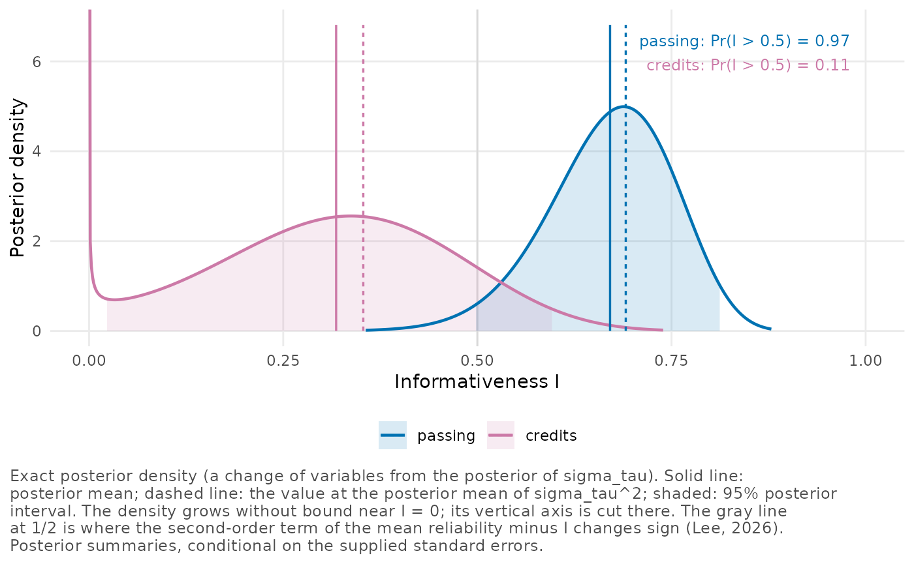
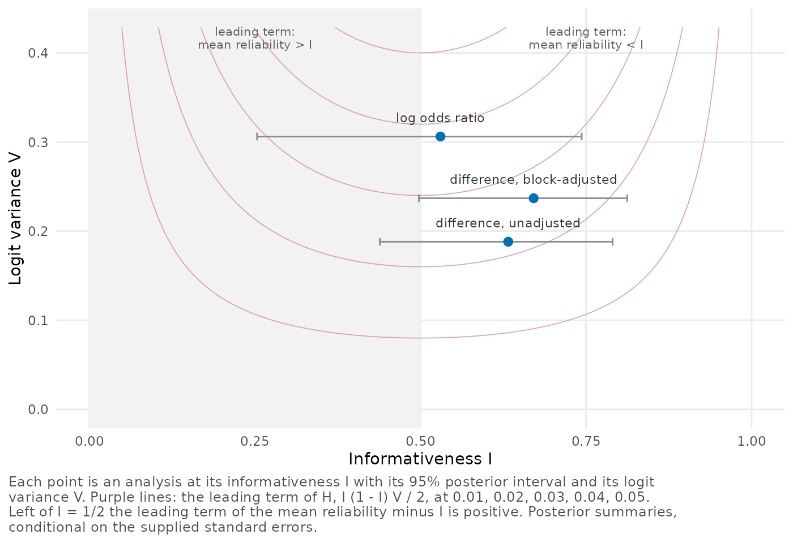

A multisite trial: the Online Credit Recovery Study
Source:vignettes/multisite-trial.Rmd
multisite-trial.RmdOne trial can give several sets of site estimates, for example one
for each outcome, each subset of sites, each choice of covariates or
each effect measure. poolinfo’s diagnostics describe one such set
together with its standard errors, so the same students can give
different diagnostics. In this vignette we analyze the Online Credit
Recovery Study as a whole, as Section 8 of Lee
(2026) does. We take its two outcomes,
its two subjects, a covariate-adjusted analysis and three first-stage
analyses of passing, and for each outcome we say what we would do next.
If the informativeness
,
the mean reliability
,
the dispersion
,
the logit variance
or the concentration count
is new to you, vignette("poolinfo") defines them, with the
passing outcome as its example.
The trial and its site estimates
In the summers of 2018 and 2019, the study assigned students in Los
Angeles high schools by lottery to one of two versions of their school’s
summer course, an online course or the usual course directed by a
teacher (Rickles et
al. 2024; American Institutes for Research
2024). All of them had failed Algebra 1 or English 9 in their
first year. A site is one school’s course in one subject, and the data
set ocrs has a row for each site in which students were
assigned to both versions. We count the sites in each subject and the
schools, and summarize the sites’ sizes.
table(ocrs$subject)
#>
#> Algebra 1 English 9
#> 13 19
length(unique(ocrs$school))
#> [1] 24
summary(ocrs$n)
#> Min. 1st Qu. Median Mean 3rd Qu. Max.
#> 24.00 39.75 49.00 54.28 64.50 104.00Of the 32 sites, 13 are in Algebra 1 and 19 in English 9. They belong to 24 schools, so 8 schools have a site in each subject. A site has 24 to 104 students, and the median site has 49.
Within each site, the estimate is the coefficient of the treatment indicator in a least squares regression of the outcome on that indicator and the randomization blocks, with the HC2 standard error. This coefficient is a weighted average of the blocks’ differences between the two courses, with weights proportional to , where is the size of block and the proportion of its students assigned to the online course. A block whose students all took the same course gets no weight. An average effect over all the site’s students would weight each block by its size instead, and the two weightings differ in all 28 sites that have more than one block (Lee 2026, sec. 8 and Appendix G). Each estimate is therefore a block-adjusted contrast, which can differ from the effect averaged over the site’s students.
ocrs contains five sets of site estimates, each with its
standard errors:
-
estimate,se: course passing, as the block-adjusted difference in the proportions passing. -
estimate_adjusted,se_adjusted: the same regression with four baseline covariates added, the grade 8 state test score in the subject and the grade 9 GPA, each with an indicator of a missing value. -
estimate_credits,se_credits: credits earned in the subject by the end of the fourth year of high school, from the same regression asestimate. -
estimate_unadjusted,se_unadjusted: the difference in the proportions passing between the two courses, ignoring the blocks. -
log_odds_ratio,se_log_odds_ratio: the log odds ratio of passing, from the same table of course by outcome as the unadjusted difference, so it ignores the blocks too.
?ocrs describes how each pair was computed from the
study’s public-use file. If you start from student records of your own,
you compute such estimates and standard errors site by site and then
pass them to poolinfo.
Outcomes, subjects and covariates
We fit the posterior for passing in all 32 sites and in each subject,
for adjusted passing and for credits. Each fit records the scale of its
effects and the estimand at each site (scale_label and
target_label), which the table at the end repeats, and
compare_profiles() collects the fits.
rd <- "risk difference"
itt <- "the block-adjusted intention-to-treat contrast for course passing"
fit_passing <- function(data) {
reliability_posterior(estimate, se = se, site = site, data = data,
scale_label = rd, target_label = itt)
}
algebra <- ocrs$subject == "Algebra 1"
fits <- list(
passing = fit_passing(ocrs),
`passing, Algebra 1` = fit_passing(ocrs[algebra, ]),
`passing, English 9` = fit_passing(ocrs[!algebra, ]),
`passing, adjusted` = reliability_posterior(
estimate_adjusted, se = se_adjusted, site = site, data = ocrs,
scale_label = rd,
target_label = "the covariate-adjusted contrast for course passing"
),
credits = reliability_posterior(
estimate_credits, se = se_credits, site = site, data = ocrs,
scale_label = "credit",
target_label = "the block-adjusted contrast for credits by year 4"
)
)
comparison <- compare_profiles(.list = fits)
comparison
#> Comparison of 5 analyses
#> Intervals are central posterior intervals.
#> Each analysis is conditional on its own standard errors.
#>
#> analysis J informativeness I mean reliability
#> passing 32 0.671 [0.497, 0.812] 0.663
#> passing, Algebra 1 13 0.629 [0.294, 0.865] 0.625
#> passing, English 9 19 0.707 [0.493, 0.868] 0.698
#> passing, adjusted 32 0.652 [0.474, 0.800] 0.644
#> credits 32 0.318 [0.022, 0.597] 0.327
#>
#> analysis dispersion H concentration count J_eff
#> passing 0.0253 [0.0185, 0.0289] 31.2
#> passing, Algebra 1 0.0164 [0.0086, 0.0196] 12.7
#> passing, English 9 0.0284 [0.0176, 0.0342] 18.5
#> passing, adjusted 0.0279 [0.0205, 0.0317] 31.0
#> credits 0.0285 [0.0031, 0.0376] 28.8Of these analyses, the two outcomes differ most. For passing, the posterior mean of is 0.67 (95% posterior interval 0.50 to 0.81), so a site with the geometric-mean standard error keeps about 67% of its own estimate. For credits, is 0.32 (0.02 to 0.60), and such a site keeps only about 32% of its estimate. The posterior probability that exceeds 1/2, the value at which the model would move such a site halfway toward the mean effect, is 0.97 for passing and 0.11 for credits, with 1/2 as a reference point only. Site by site, the reliabilities run from 0.42 to 0.84 for passing and from 0.11 to 0.51 for credits, and the concentration counts are 31.2 and 28.8 of 32. For passing the mean reliability is a little below (0.663 against 0.671), and for credits a little above it (0.327 against 0.318). These are the directions that the leading term of gives when is above or below 1/2.
In the average site, assignment to the online course lowered the proportion passing by 13.0 percentage points (95% posterior interval 5.0 to 21.1). Its effect on the credits earned has a posterior mean of -0.1 credits (-1.9 to 1.6).
These diagnostics lead us to different next steps for the two
outcomes. As Lee (2026) concludes, the passing profile
supports a closer look at the effects of the individual sites, starting
from the posterior means and intervals of site_table().
Ranking the sites would still call for its own measure of uncertainty,
because the diagnostics describe the estimates as a whole. The credits
profile gives a more uncertain basis for such an analysis, and for
credits we would report the mean effect and the between-site standard
deviation before turning to individual sites.
Adding the baseline covariates lowers for passing from 0.671 to 0.652. Covariates that predict the outcome usually shrink the standard errors, which would raise . Here, though, the HC2 standard errors grew in 20 of the 32 sites, and their geometric mean rose from 0.128 to 0.131. Meanwhile the posterior mean of fell a little, from 0.188 to 0.184. Each analysis is conditional on its own standard errors, so a first-stage choice that changes them changes the diagnostics too.
Each subject’s analysis describes its own set of sites and has its own between-site standard deviation. With 13 and 19 sites, their posterior intervals for are wider than the pooled one: 0.29 to 0.87 for Algebra 1 and 0.49 to 0.87 for English 9. To analyze all 32 sites together while letting the two subjects have different mean effects, we put the subject in the mean model instead. Each site is then pulled toward the mean of its subject, and describes the variation around the two means.
by_subject <- reliability_posterior(estimate, se = se, site = site,
data = ocrs, mean_model = ~ subject)
by_subject
#> Reliability profile of 32 sites (posterior)
#> Model: estimate ~ N(effect, se^2), effect ~ N(x'beta, sigma_tau^2),
#> sites independent
#> Prior: flat on the coefficients of the mean model and on sigma_tau
#> Summaries are conditional on the supplied standard errors.
#> Each site counts equally in the diagnostics, whatever its size.
#>
#> mean 95% interval
#> informativeness I 0.672 0.496 0.814
#> mean reliability 0.664 0.497 0.804
#> dispersion H 0.0252 0.0183 0.0289
#> concentration count J_eff 31.2 30.3 31.7 of 32
#> logit variance V 0.237 (fixed by the standard errors)
#> sigma_tau 0.188 0.127 0.268
#> coefficient (Intercept) -0.0805 -0.209 0.0481
#> coefficient subjectEnglish 9 -0.0827 -0.248 0.0821
#>
#> Pr(I > 0.5) 0.973
#> I at E(sigma_tau^2) 0.692In this fit the English 9 sites’ mean effect is 8.3 percentage points below that of the Algebra 1 sites, with a 95% posterior interval for the difference from 24.8 points below to 8.2 points above. With at 0.188, as with a common mean, is 0.672 against 0.671, so taking out the difference between the subjects leaves the variation between sites where it was.
Posteriors of the informativeness
Next we compare the posterior densities of
for the two outcomes. We keep the pair of fits in outcomes,
which also gives the table at the end.
outcomes <- compare_profiles(passing = fits$passing, credits = fits$credits)
plot_functionals(outcomes)
The shaded 95% posterior intervals overlap only between 0.50 and 0.60. At the left edge the credits density rises without bound, and the plot cuts it off. This happens in every analysis under the flat prior, because the posterior density of is positive at 0 and, near 0, grows like . How much of it shows depends on how high the posterior of is at 0. For passing that height is about of the posterior’s peak, so nothing is visible, but for credits it is 0.09 of the peak.
Dashed lines mark at the posterior mean of , 0.691 for passing and 0.353 for credits. Both lie right of the solid lines, the posterior means, because is a concave function of (Lee 2026, Proposition 3), and the gap is 0.020 for passing and 0.035 for credits.
The contrast and the effect measure
Reporting the effects in percentage points rather than proportions multiplies every estimate and standard error by 100. Under the flat prior the diagnostics stay the same, because grows by the same factor as the standard errors (Lee 2026, Appendix G); a proper prior would need its scale multiplied too. A different contrast or a different effect measure is another kind of change, since it alters the spread of the true effects and the standard errors in different ways. We compare three analyses of passing: the block-adjusted difference used so far, the unadjusted difference in the proportions passing, and the log odds ratio. Both of the last two come from the same table of course by outcome in each site, so the step between them changes the effect measure alone.
unadjusted <- reliability_posterior(estimate_unadjusted, se = se_unadjusted,
data = ocrs)
log_odds <- reliability_posterior(log_odds_ratio, se = se_log_odds_ratio,
data = ocrs)
scales <- compare_profiles(`difference, block-adjusted` = fits$passing,
`difference, unadjusted` = unadjusted,
`log odds ratio` = log_odds)
scales
#> Comparison of 3 analyses
#> Intervals are central posterior intervals.
#> Each analysis is conditional on its own standard errors.
#>
#> analysis J informativeness I mean reliability
#> difference, block-adjusted 32 0.671 [0.497, 0.812] 0.663
#> difference, unadjusted 32 0.632 [0.439, 0.790] 0.628
#> log odds ratio 32 0.530 [0.253, 0.743] 0.530
#>
#> analysis dispersion H concentration count J_eff
#> difference, block-adjusted 0.0253 [0.0185, 0.0289] 31.2
#> difference, unadjusted 0.0211 [0.0160, 0.0231] 31.2
#> log odds ratio 0.0346 [0.0263, 0.0367] 30.2Dropping the blocks lowers from 0.671 to 0.632, and the log odds ratio lowers it again, to 0.530, with a posterior probability of 0.63 that exceeds 1/2. Next we place the three analyses in the plane of and , with contours of the leading term of the dispersion, .
plot(scales, type = "plane")
The log odds ratio lies above the two differences in the plane, at against 0.19 for the unadjusted difference and 0.24 for the block-adjusted one. Its sampling variance grows as a site’s passing proportions approach 0 or 1, whereas a difference’s is largest when they are near 1/2, so the two measures spread the same sites’ standard errors differently. Both differences lie between the contours at 0.02 and 0.03, and the log odds ratio between 0.03 and 0.04, in line with their dispersions of 0.025, 0.021 and 0.035. In a report we would name both the contrast and the effect measure, as the labels of the fits for the outcomes do.
Schools with two sites
Each of the 8 schools with a site in each subject contributes two estimates, and some of its students appear in both, while the model treats all 32 sites as independent. Each site also counts once in the diagnostics, whatever its size, so these schools count twice. To see how much this matters, we keep one site of each such school, in all ways, and refit both outcomes to each set of 24 sites.
paired <- as.integer(names(which(table(ocrs$school) == 2)))
choices <- expand.grid(rep(list(c("Algebra 1", "English 9")), length(paired)))
I_of <- function(fit) subset(profile_summary(fit), quantity == "I")$mean
I_subsets <- t(apply(choices, 1, function(subject) {
keep <- !(ocrs$school %in% paired) |
paste(ocrs$school, ocrs$subject) %in% paste(paired, subject)
sites <- ocrs[keep, ]
c(passing = I_of(reliability_posterior(estimate, se = se, data = sites)),
credits = I_of(reliability_posterior(estimate_credits, se = se_credits,
data = sites)))
}))
apply(I_subsets, 2, range)
#> passing credits
#> [1,] 0.6120245 0.1159935
#> [2,] 0.7480950 0.4207495Across the 256 sets of 24 sites, the posterior mean of runs from 0.612 to 0.748 for passing and from 0.116 to 0.421 for credits, against 0.671 and 0.318 with all 32 sites. Passing stays above 1/2 and credits below it in every set, so the contrast between the outcomes survives whichever site of a paired school we keep. These refits vary the set of sites. Allowing for the students who appear in both of a school’s sites would take a model with the covariance between the school’s two estimates, which the working model leaves out (Lee 2026, sec. 9).
A table for the report
report_table() lays out a comparison in the format of
Table 5 of Lee (2026) and adds a note for the readers of
the report. We make the table for the two outcomes.
cat(report_table(outcomes, format = "markdown"))| Analysis | J | I [95% interval] | Mean reliability | H [95% interval] | J_eff | Pr(I > 0.5) |
|---|---|---|---|---|---|---|
| passing | 32 | .67 [.50, .81] | .66 | .025 [.019, .029] | 31.2 | .97 |
| credits | 32 | .32 [.02, .60] | .33 | .028 [.003, .038] | 28.8 | .11 |
Note. Each estimate is modeled as normal around its site’s effect with a known sampling variance, and the site effects as independent and normal across sites. Flat priors on the mean and the between-site standard deviation. Scales of the effects: risk difference (passing); credit (credits). Estimands at each site: the block-adjusted intention-to-treat contrast for course passing (passing); the block-adjusted contrast for credits by year 4 (credits). Summaries are conditional on the supplied standard errors, and each site counts equally in the diagnostics, whatever its size.
The note under the table carries the scale and the estimand that we
set for each outcome. Called with comparison,
report_table() makes the table for all five analyses, and
with format = "latex" it writes the table as LaTeX code
with the rules of the booktabs package.